Letters To You
A love letter to my mona
Goodbye for now
Dear Hanna,
This might be the last time we speak for a while.
It’s been more than two weeks since everything started unfolding. The reality of it has properly sunk in, I’m slowly trying to heal, hanging on to our memories, but ultimately I don't know what goes on in your mind.
I’ve been facing my flaws head on and I’m far from perfect yet, but I’m working on them the best I can.
I saw something online a few days ago that really stuck with me:
“Do more than nothing every day.” As simple as that.
That would’ve felt impossible for me 4 or 5 months ago and If I’m honest, some days it still feels hard to achieve.
There are days I don’t want to sit down and do the Google course. But if I can’t focus for 5 hours, I’ll do it for 1. If I can’t do 1, I’ll do 5 minutes. But I’ll do something!
I don’t always feel like exercising either. But If I can’t go for a 10k run, at least I’ll do 40 pushups and 50 abs.
I keep moving forward and trying my best to not let myself down again.
I know that at some point things will start feeling better again and I won’t have to force myself through the day. It’ll feel natural and I’ll feel good with myself again.
Which brings me to the next topic, our relationship.
Although I still care about you and I haven’t completely closed the door on a future together, I understand that anything I say right now probably doesn’t change a thing for you.
We’re at different stages right now.
I’m hurting, disappointed, and reflecting.
But you might be feeling relief, and numbness. This was weighing on you for a while and you just needed it to be over. So right now, there’s no space for analysis, conversation about the future, or even regret.
We need space to heal, to grow, to gather our thoughts.
The question is, can we wait for each other to heal, and then see if there’s something worth saving?
So, in that spirit, and in hopes that we might heal and revisit our situation in the future, there’s some things I want to acknowledge clearly. They won’t mean much now, but hopefully you can see it with different eyes and a fresh perspective at some point.
First, as I’ve said before, I take full responsibility and blame for a lot of what happened. My attitude. My lack of empathy at times. My lack of direction and drive towards building a future together. I can see how that affected you and your wellbeing, I see how that played a big role in our decline.
I understand how being around my low energy and lack of action pulled you down too.
I need you to know none of it was intentional though.
I never wanted to hold you back, isolate you, or keep you away from your friends and family so I could keep you all for myself. I never intended to manipulate you or prevent you from achieving your goals, or growing as a person and a professional.
I was hurting, I didn’t realize it on time, and it sucked you in.
Instead of protecting you from that I let you get pulled into it with me, and that’s on me.
But please know that even at my lowest, I always wanted you to feel free, supported, understood, and give you the strength to go after your dreams or offer a shoulder when doubts crawl in. And I always loved you. Every fucking second.
Second, about the Instagram situation.
I also take responsibility there. We don’t need to go over it again but obviously I should have handled it differently. I understand why it hurt you.
I understand how it impacted your self esteem, and I understand that you need reassurance that will never happen again.
I always tried telling you how beautiful and sexy you were, I thought you were the most beautiful girl in the world and I meant it.
I loved you boobs and face and tummy and all of it and I meant it. You were the best sex I’ve ever had and I meant it.
But I understand that my previous actions made it difficult for you to believe me.
What I want to say, without trying to ‘defend’ myself, is that I never cheated on you.
Not physically, and not by text.
I never entertained another girl even for a second. Not even in my thoughts.
I made mistakes in judgment, yes. But I never betrayed you.
I remember you told me “What if we get back together and in 10 years you like someone’s photo”.
I thought about it, how can I guarantee you this? I know that I mean it, but my word is probably not going to be enough right now.
So I would like to ask you this: How many couples do you know that have cheated on each other in less than 2 years? How many people do you know that have done far worse than that? How many families have been destroyed, even people who have a child together?
I’m not trying to say ‘hey, I wasn’t that bad’
Because:
1) I did something bad and it hurt you, and it involuntarily happened more than once. That’s on me, there’s no denying it, and it’s inexcusable. I won’t try to justify myself.
2) We need to aim for perfection, for true love and for honesty and respect in all forms, we need to make each other loved and not compare ourselves with failed cases.
But I only mean to point out that no matter who you end up with, infidelity will probably always be a concern for everyone involved. There are no guarantees, and you will have some of these concerns again with someone else because you already had them in you when we first started dating.
How did his ex look like? Does he like girls with a big ass, does he like brunettes better than blondes? Who is this chick he follows, did they hook up before us? Is he trustworthy? Can he go out alone without getting chatty with other women?
All of that is going to be there no matter who you date next.
I remember how scared and afraid you were that I would not like you anymore.
But I did. You were always more than enough in my eyes and If I could do it all again, I would make sure you know it, that you were my priority ALWAYS. And if we ever get lucky with a second chance, I will show you everyday, you are the most beautiful girl in the world and I mean it.
I fucked up, I know. I owned up to it, and I improved.
I’ve learned from that mistake, and it’s not something I would ever repeat.
Finaly, I want to get one last thing out of my chest.
Those were cases where I was clearly at fault, but where I struggle a little is this:
I don’t believe I was 100% responsible for everything that led to the breakup.
I was more at fault than you were, that is obvious.
But I believe we could’ve solved a lot if we were more open with each other, if we had better communication.
You knew I had struggled with big depression before and you saw me struggling again.
And I know you tried in your own way to push me or encourage me.
You gave me breadcrumbs for me to follow, sometimes even being more direct.
And I remember my replies like ‘I know I need to go running, I’ll start another time’, or ‘yeah I need to figure out what to do, I’ll do it later’.
So yes, I am aware and I appreciate it more than I showed at the time.
But what I needed was a wake up slap across the face. I needed to be sat down and we should’ve had a serious talk. I needed you to let me know things were not okay, that you were not happy and not just with work and the lack of friends, but also between us.
You would subtly try to tell me that I was being lazy or not doing enough for our common future and then walk it back by reassuring how much you loved being with me every second and that you didn’t care about going out that much when I would show signs of remorse and suggest that we should go out more.
But I needed a big spark to get me started, and I needed to know that my behavior was not acceptable.
That I needed to change not later, but right now.
And I needed to know that you understood me, and that you believed in me, believed that I could get through it and make things right.
However, we never really had that deep talk.
I failed to express what I was going through, and you couldn’t express your fears and tell me what you were carrying inside.
And honestly, I don’t blame you for not doing it.
I didn’t fully understand how serious things had become for you. I didn’t realize how much damage had already been done.
And you didn’t even fully know yourself until you stepped away. Maybe we were both too deep in it to see clearly, and we failed to see how to help each other out.
When you ended things, it was completely sudden to me.
You were telling me how much you loved me and missed me 3 weeks ago. So it was an insane shock. And an even bigger one to find out there was no turning back.
I was worriying too much about leaving or staying that I forgot to let you know you were my priority.
I wish we could have sat down, opened everything up, and fought harder for clarity before it reached the breaking point. Not because I deserved saving tbh, I know I wasn’t showing up the way I should have and it is not your job. It is my job to help myself and take care of you at the same time.
But what we had for two years was real and beautiful. And I believe it deserved a fighting chance.
We could have communicated better and tried harder before letting go. Before you were done with me.
I want to be clear again: none of this is an excuse for my behavior.
I messed up. I own that. I regret many things, and I’m working on becoming better every day (not just for a relationship, but for myself.)
At the same time, it hurt that you let me believe I was the only villain in our story. That I was pretty much a piece of shit without any redeeming qualities, except that ‘we had lots of fun’ as if that’s all our relationship ever was, some fun moments and nothing deeper.
Maybe this was a way for you to justify the breakup more easily. Or maybe you just think that’s really all it was.
Regardless, I accept my responsibility. And I hope you can still remember that I wasn’t always like that. That I had a completely different side of me that you met and fell in love with.
I guess what im trying to say is don't fully shut the door on me yet..
I know I did some bad, but I also did plenty of good. And we can replicate the good times while fixing the bad ones
Now is not the time, but things don't just happen, we need to make them happen, and I'm worried we are not going to try or time will pass us by
Anyways, I don’t know what the future holds. I just want you to know that I’m taking this seriously. I’m not running from my flaws. I’m working on it.
But I also can’t keep chasing you every second like a sad puppy while you’re in this ‘I don’t care anymore’ phase.
If after some time (hopefully not too long hehe) and some healing, you find yourself curious about a possible reconnection, please let me know. Please make the effort, and we can see if there’s a real chance for us, for an improved relationship where we both feel fulfilled and we both support and love each other till the rest of our days.
And if not, I will still be happy for the love we had, for everything we shared. Although, I don’t believe this is the end 😊
Take care of yourself, you are always in my heart. I fucking love you.
Your mono, Franz.
Take a deep breath
...
Count to 10
...
Look straight into the picture
...

send nudes (respectfully)
Us?
Dear Hanna,
I am a bit worried that you’re fighting to forget me, instead of fighting to forgive me.
Instead of fighting for us.
But then again, as I wrote a couple of days ago, I am impatient and I want to jump straight to the good part.
I want to be traveling around the world with you
dancing to stupid songs
trying new beers
trying new pizzas
getting all excited when 'they have vapes for sale here!!' haha
I want to be cozy in bed hugging and watching memes with you :)
And speaking of memes, I have so many that I want to share with you!!
Funny ones, interesting ones, memes about the sopranos, about twin peaks, F1, about monkeys doing monkey things.
But mostly I’ve been getting so many super cute cat/monkey/animated couples memes that perfectly embody how I feel, what I want, and how we were when we were together at our peak.
At this point it’s quite clear that my phone is spying on me because there is no way I’m getting all that immediately after we broke up haha.
But security breach or not, they make me smile, they make me cry, they make me think of you.
Unfortunately I know I can’t send them to you right now.. So I’ve been saving them.
Saving them and hoping that one day I can send them to you again with the classic caption; “Us”.
With love,
Franz
Feb 24th, 2026
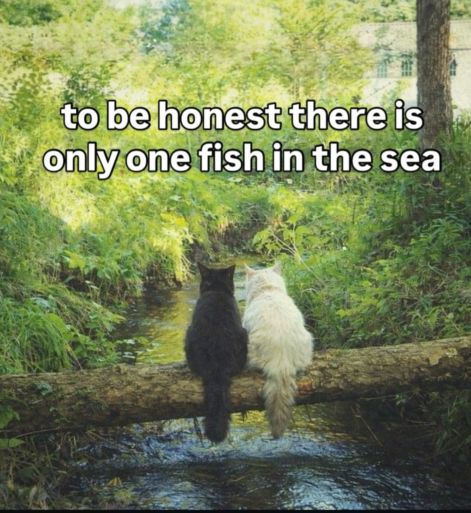 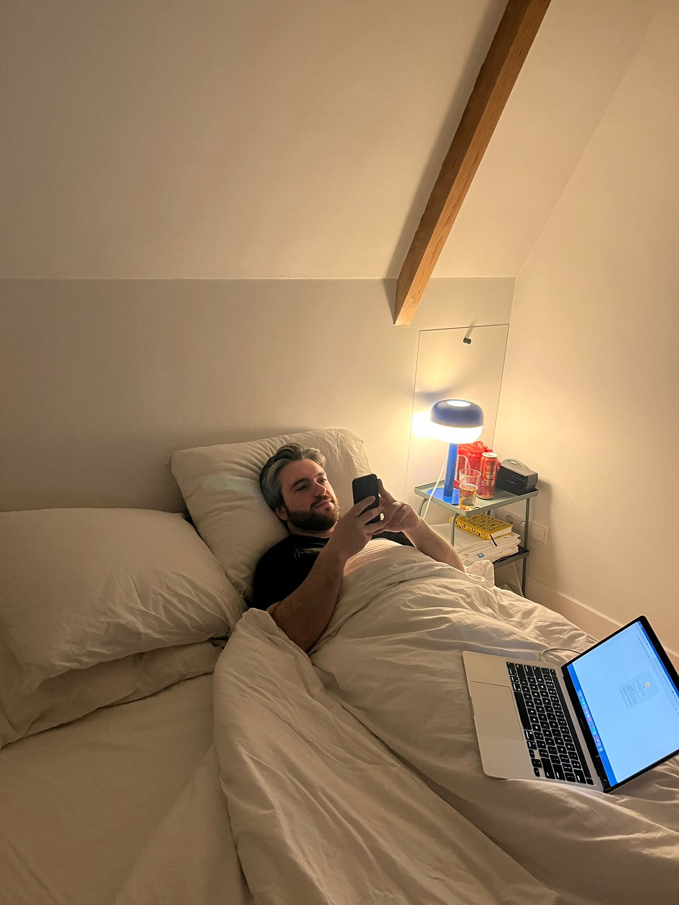
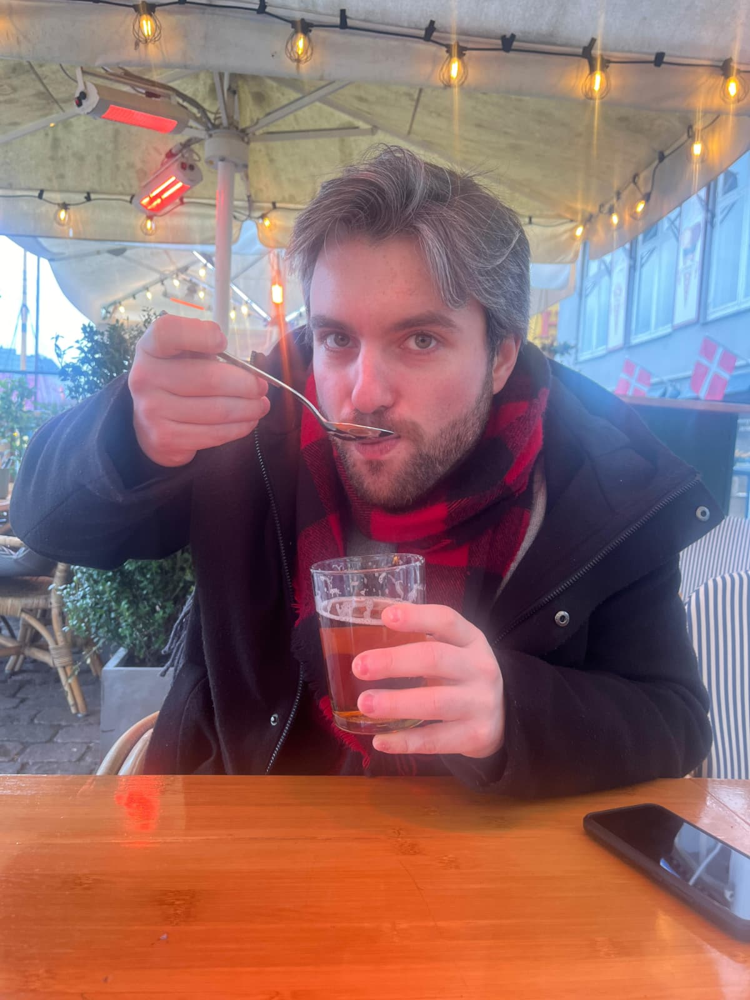
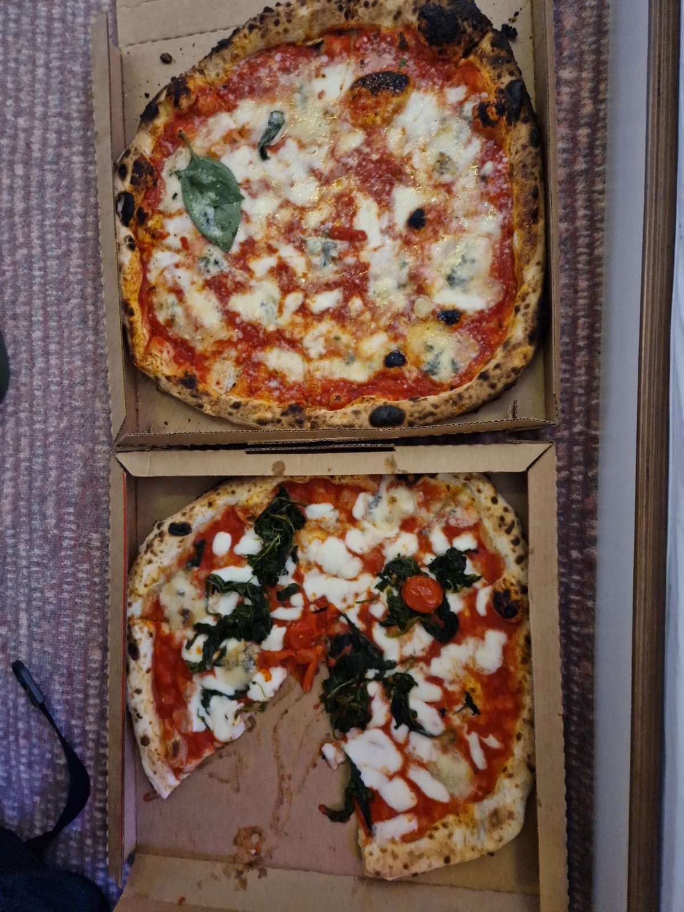
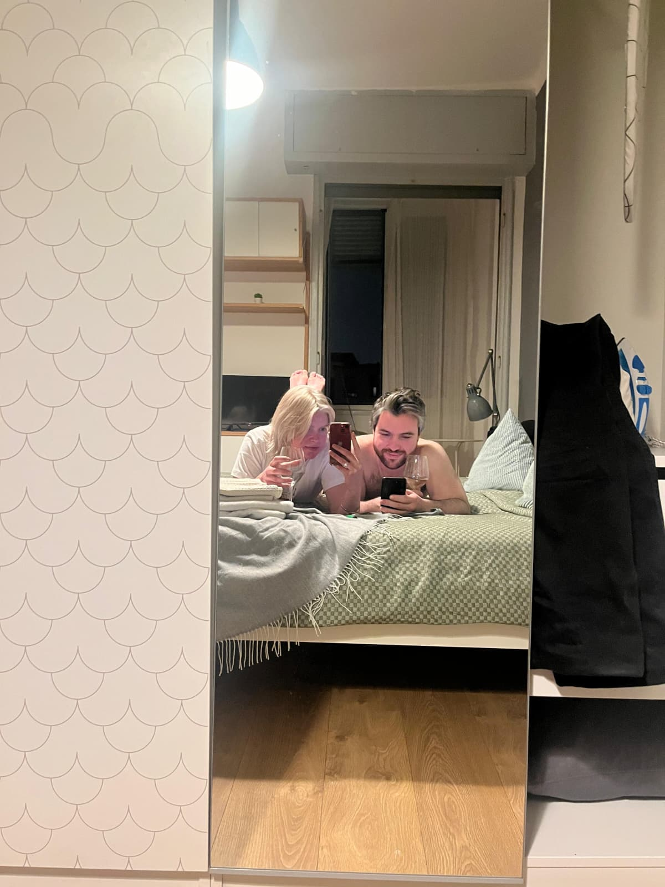
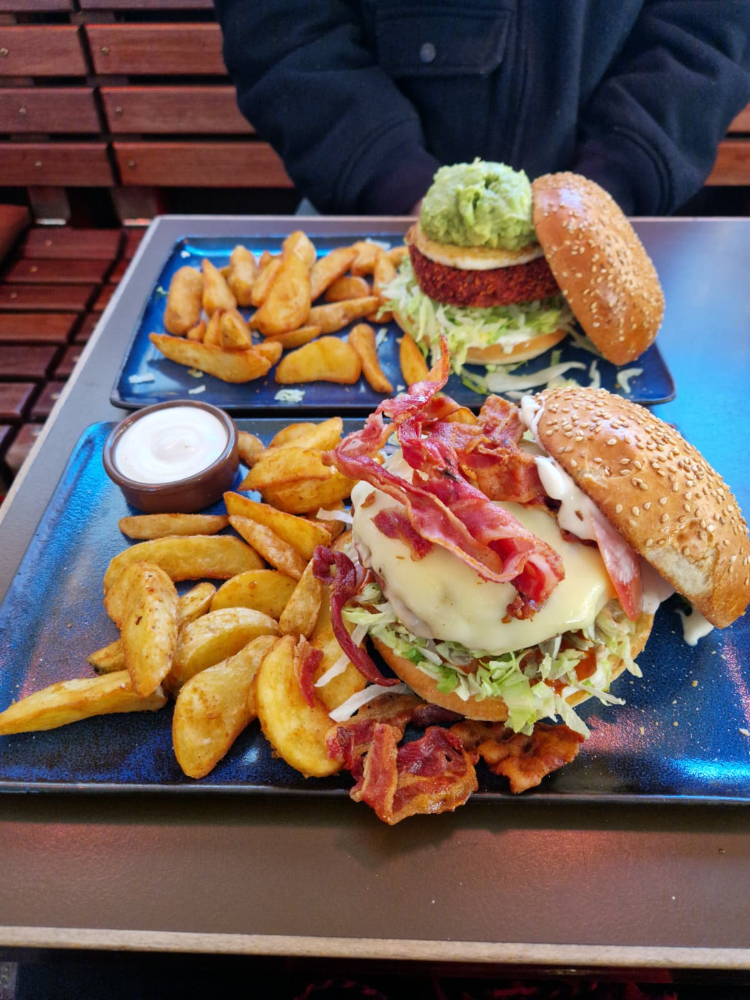
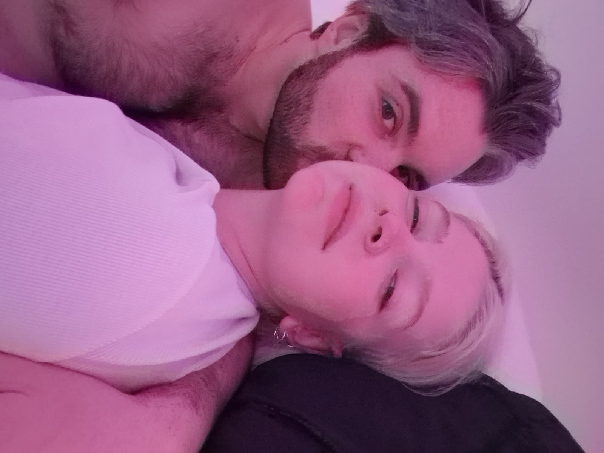
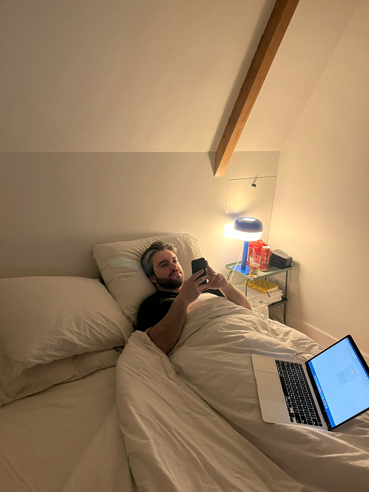
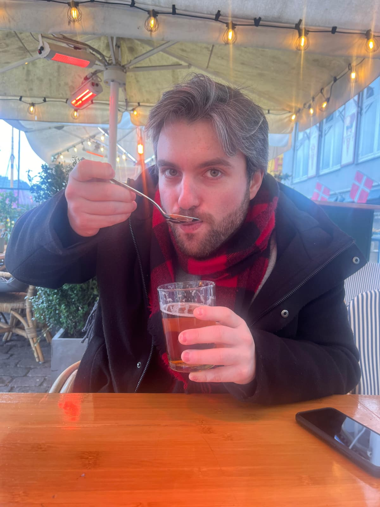
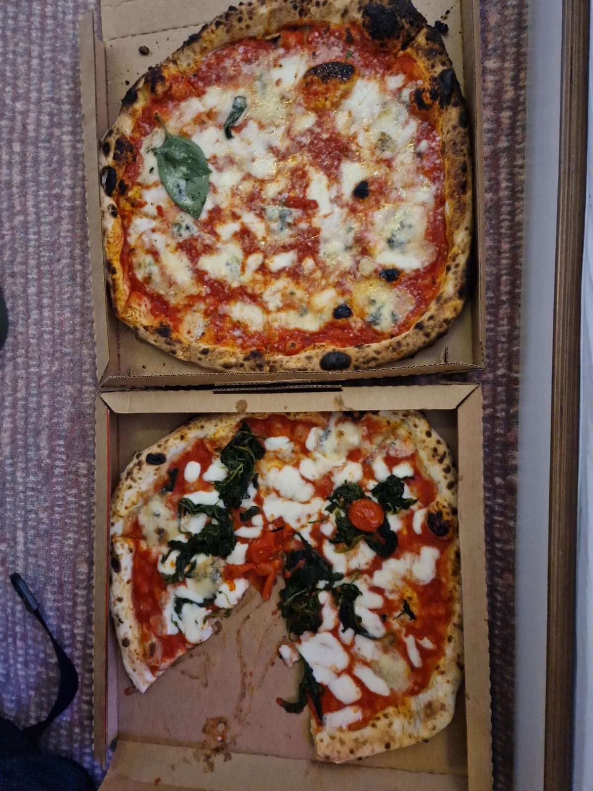
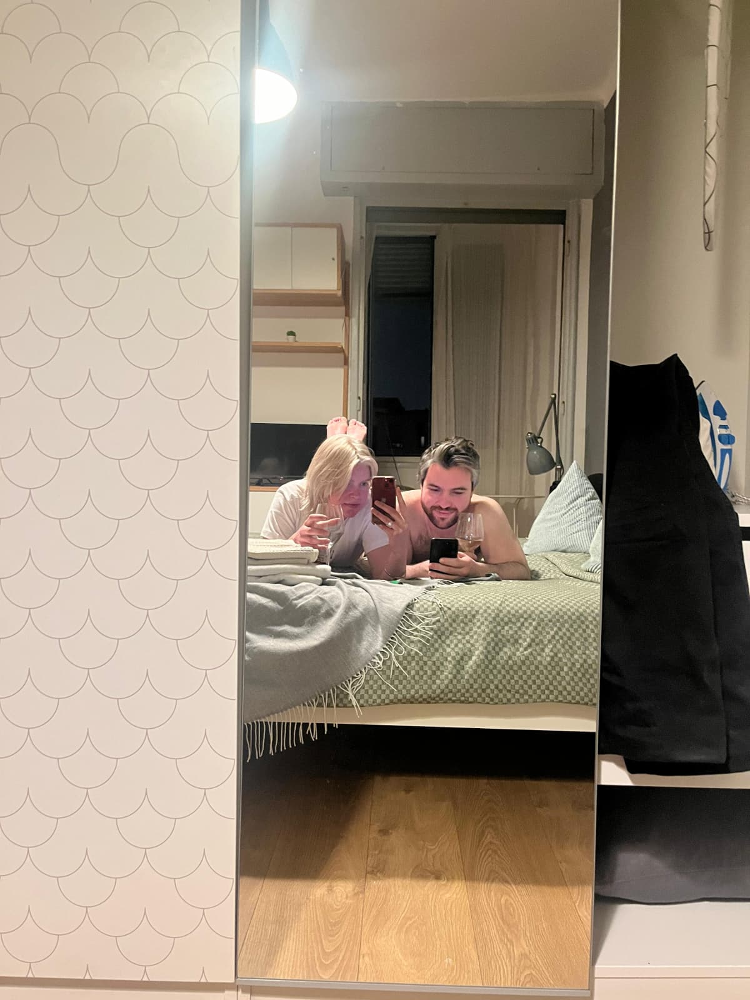
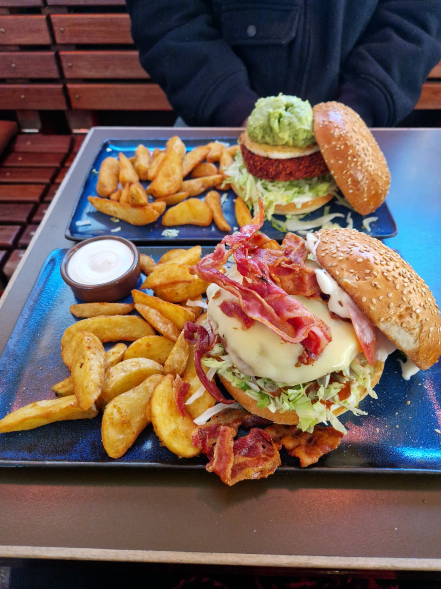
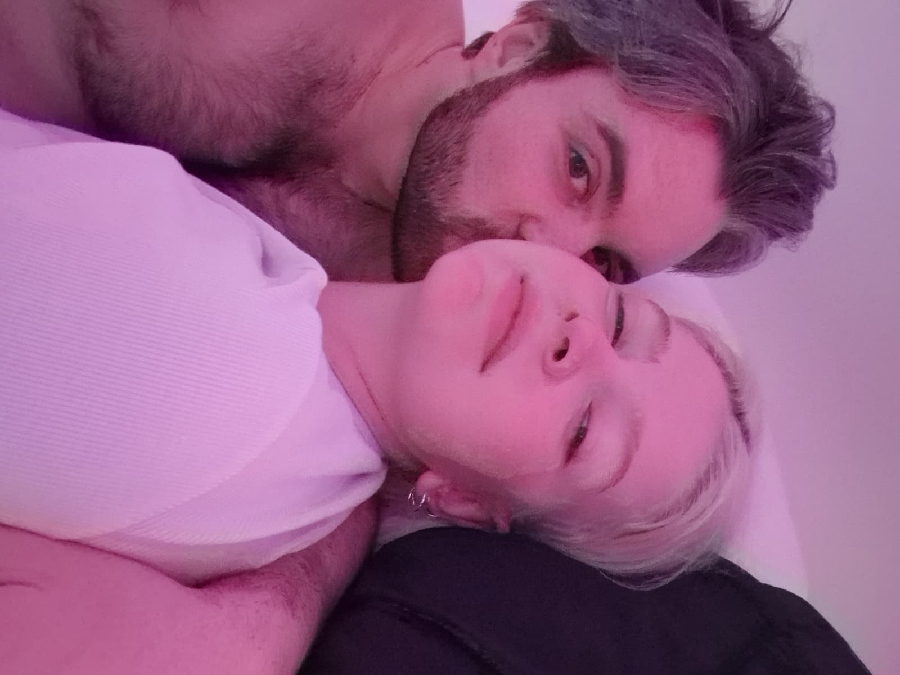
The Kiwi Chronicles
Hi 😊
Time for me to talk to the wall again, hoping that you will read it and it will bring you a smile.
Hoping that you still care.
First, an update on Kiwa. You haven’t asked but I know you care and probably think she’s well cared for. And you would be right hehe, she seems to have made a full recovery, I am still giving her antibiotic pills, but her attitude is back to normal.
Running around, jumping around, constantly attacking mango (she loves him), meowing, purring and cuddling with me in the mornings.
I think she misses you, it’s hard to tell if animals will remember us when we are gone, but you were such a huge part of her infancy that I’m 100% sure she wonders where that beautiful blonde lady that used to take care of her is, her momma.
I wish I could tell her that the decision to leave broke your heart, but you had to do it for your wellbeing.
Then we could lay in bed at night and miss you together.. hoping that one day we will hug you again.
On another note, just when I was praising her, right when I was thinking about this letter, I heard a loud bang coming from behind me...
Aaaaaaaaaaand she broke the bedside lamp. Destroyed it completely, the last one. Fucking bitch hahah.
Now she's back to sleep, in the carry box thingy that I used to take her to the vet.. She loves it in there haha.
As for me, well, I’m still holding the candle.
I get more impatient with each day, I can’t wait to talk to you, to see you, to share my life with you, to experience your new life and watch you work on those tables hehe, to jump to the part where you realize we still love each other and that love requires hard work and sacrifice and we don’t always get it right at the first try.
I can’t wait to jump to the part where you give me the chance to make everything right again.
But, I have to fight my urges and let you be. Which makes me scared because I know that day might never come and that a message from me would mean nothing to you.
And that thought is enough to break my heart again.
Nevertheless, I'm staying positive and this is for you
Thank you for trying your best to be in Uruguay for me
Thank you for being my biggest supporter
Thank you for loving me even when I didn't love myself
I appreciate you so much, more than I was able to show
I really hope you know how much you mean to me
You’re such a wonderful person with a pure heart
You’re still the one I run to
There hasn’t been a night where I didn’t fall asleep thinking about you
You’re the one that I belong to
The one that I want for life
There is no version of the future I want to live in that doesn’t have you in it
You’re still my home.
You’re still my life.
Franz
22, Feb 2026


Another Day
Dear Hanna,
Today I woke up and started another day
A pretty normal one; had lunch, played with kiwi, applied to some jobs and got frustrated by the lack of apparent opportunities.
Normally that’s when I’d feel overwhelmed and I’d open CS to play a couple of matches to block those negative feelings out. But I chose to open the Google Certificate thingy instead and did that for a while. Not for too long, but long enough. A step forward, nonetheless.
The day, however, was marked by a conversation we had about a month ago.
From the moment I woke up I couldn’t get it out of my head, and it would come back every few hours to haunt me until I put pen to paper and confront it.
You see, at the time you had gone out with your friends, and we were disconnected for a couple of hours. You finally got back to me hours later and were a bit drunk.
That was probably the 3rd outing you have had in a short span, and I was feeling left out, angry, scared, worried.
Not because of you meeting your friends - you were just having fun, and you deserved it!
But because I was scared that you would somehow forget me and move on. I was worried that you would meet someone new. I was angry because I was hating myself and I was powerless.. Or at least that’s how I felt at the time.
I was frustrated because you’d flipped my photo on the back of your phone and that somehow meant you were ashamed of me and you didn’t want people to see me.
I know now there’s plenty I could’ve done differently in that situation.
I could’ve given you more attention and showed you that you were always on my mind, showed you I was worth keeping around.
I could’ve found stuff to do together over the phone and kept us connected. I could’ve told you how I was feeling, and more importantly I could’ve planned our future together to make sure we had something to look forward to.
But instead, I detached myself slightly. In search for validation, in search for that ‘what’s wrong baby’ message that would show me you still loved me.
You had always been spot on in the past in detecting when I was feeling hurt, and you asking had always felt like a hug to my soul, a bit of validation and reassurance that I’m still your mono. Even when I wasn’t making things easy for you.
Of course, in doing that, in my search for reassurance, I was hurting you in the process.
So, you asked me why I was being distant.. why was I not saying ‘I love you, I miss you’ more often.
You said you weren’t doing anything wrong so why was I making you feel like you had.
And even back then, this feeling of me failing you took over me. Why was I doing that? I mean I know why.. for the reasons I listed above! But you didn’t deserve to feel that way. You deserved to be treated like the amazing woman you are. So, I would walk my attitude back and reassure you that I loved you, and that nothing was wrong. Hiding the truth that I was in fact really hurt, and moving on to the next topic, to the next day..
I can learn many things from this life lesson.
But the most important one is communication.
A flourishing relationship must have it as a foundation.
So, from my side of things, I should’ve communicated my feelings and I should’ve shown you how much I fucking loved you. Even if I was scared, even if I was hurting, even if it rained.
Forever yours,
Franz
21, Feb 2026 (still)


Always And Forever
Dear Hanna,
I’m not sure how to navigate the waters that are ahead of us.
I’ve accepted the fact that the only thing that can heal us now is time.
I need to let you breathe, I need to let you figure out your feelings. I need to be careful enough not to make you sigh and say: ‘not this again, not this guy… ‘
But time.. Time is also the thing that can make us move on and grow apart.
So, you see.. I am at an impasse right now
On one hand, the reality of the pain I caused you and the dreadful consequences that came with it.
On the other, the unstoppable feeling that burst out of my heart screaming DON’T YOU DARE GIVE UP NOW!
Ultimately, I must let things play out and run the risk of losing you for good.
But I will not go down without a fight. And another fight, and another fight… Because you deserve nothing less than that.
And as long as I live and breathe, I will still be your mono, your love, your heart.
With that in mind, I built this website.
It’s a love letter to you, and I’ll share anything here; from grandiose badly written poems to small stuff like how my day was.
Forever yours,
Franz
21 Feb, 2026